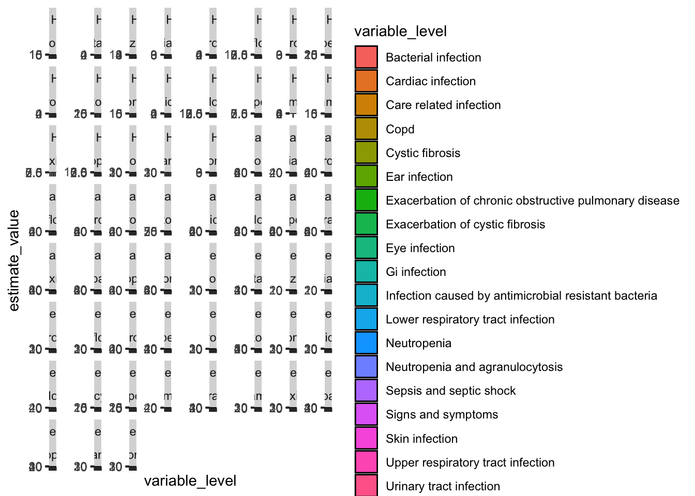
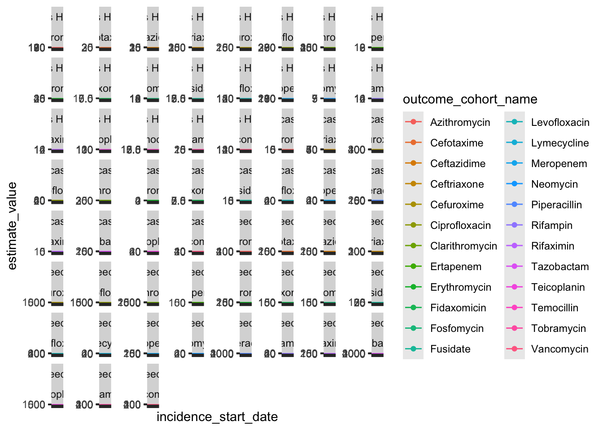

Estimate | Database name | ||
|---|---|---|---|
Barts Health | Lancashire | Leeds | |
General | |||
Snapshot date | 2025-04-25 | 2025-05-01 | 2025-05-12 |
Person count | 3,220,951 | 1,533,222 | 1,467,487 |
Vocabulary version | v5.0 30-AUG-24 | v5.0 09-SEP-22 | v5.0 30-AUG-24 |
Observation period | |||
N | 4,956,502 | 2,172,151 | 1,847,149 |
Start date | 1901-02-05 | 2005-01-01 | 1975-02-26 |
End date | 2025-03-29 | 2025-01-02 | 2025-05-08 |
Cdm | |||
Source name | Barts Health Data Warehouse | IDRIL | LTHT OMOP database |
Version | 5.4 | 5.4 | v5.4 |
Holder name | Barts Health NHS Trust | Lancashire Teaching Hospitals NHS Foundation Trust | LTHT |
Release date | 2024-08-30 | 2025-01-02 | 2025-05-08 |
Description | EDW OMOP Research | Multi-source secondary care dataset | LTHT OMOP database |
Documentation reference | - | http://omop-lsc.surge.sh/ | Not available - source is PPM |
Source type | sql server | sql server | sql server |
Report
Use of antibiotics commonly associated with antimicrobial resistance
Table 1 - Database descriptions
Table 2 - Ciprofloxacin patient characteristics + indications
Variable name | Variable level | Estimate name | Table | Window | Cohort name | ||
|---|---|---|---|---|---|---|---|
Ciprofloxacin | |||||||
CDM name | |||||||
Barts Health | Lancashire | Leeds | |||||
Number records | - | N | overall | overall | 9,313 | 2,182 | 7,729 |
Number subjects | - | N | overall | overall | 7,869 | 1,964 | 6,486 |
Cohort start date | - | Median [Q25 - Q75] | overall | overall | 2023-08-15 [2022-10-26 - 2024-05-30] | 2023-06-04 [2022-09-17 - 2024-02-25] | 2023-05-24 [2022-09-03 - 2024-02-03] |
Range | overall | overall | 2022-01-01 to 2025-03-27 | 2022-01-01 to 2024-12-29 | 2022-01-01 to 2025-03-18 | ||
Cohort end date | - | Median [Q25 - Q75] | overall | overall | 2023-08-18 [2022-10-31 - 2024-06-03] | 2023-06-08 [2022-09-22 - 2024-02-29] | 2023-06-02 [2022-09-11 - 2024-02-10] |
Range | overall | overall | 2022-01-01 to 2025-03-28 | 2022-01-04 to 2024-12-30 | 2022-01-06 to 2025-04-10 | ||
Age | - | Median [Q25 - Q75] | overall | overall | 64 [46 - 77] | 69 [56 - 79] | 67 [50 - 78] |
Mean (SD) | overall | overall | 60.26 (21.93) | 65.81 (17.71) | 61.36 (22.90) | ||
Range | overall | overall | 0 to 107 | 1 to 102 | 0 to 102 | ||
Sex | Female | N (%) | overall | overall | 4,798 (51.52%) | 1,094 (50.14%) | 3,720 (48.13%) |
Male | N (%) | overall | overall | 4,515 (48.48%) | 1,088 (49.86%) | 4,009 (51.87%) | |
Prior observation | - | Median [Q25 - Q75] | overall | overall | 2,044 [577 - 3,803] | 3,092 [1,036 - 6,131] | 2,804 [565 - 5,646] |
Mean (SD) | overall | overall | 2,402.62 (1,969.61) | 3,435.38 (2,465.40) | 3,328.41 (2,840.11) | ||
Range | overall | overall | 30 to 7,286 | 31 to 7,248 | 30 to 11,425 | ||
Future observation | - | Median [Q25 - Q75] | overall | overall | 399 [134 - 718] | 372 [131 - 682] | 481 [158 - 696] |
Mean (SD) | overall | overall | 450.82 (345.03) | 424.16 (320.01) | 469.97 (336.81) | ||
Range | overall | overall | 0 to 1,183 | 0 to 1,094 | 1 to 1,222 | ||
Days in cohort | - | Median [Q25 - Q75] | overall | overall | 4 [2 - 7] | 4 [2 - 7] | 7 [5 - 9] |
Mean (SD) | overall | overall | 5.05 (5.24) | 5.43 (5.38) | 8.95 (7.74) | ||
Range | overall | overall | 1 to 87 | 1 to 75 | 1 to 74 | ||
Indication flag | Sepsis and septic shock | N (%) | indications | -14 to 14 | 490 (5.26%) | 642 (29.42%) | 847 (10.96%) |
Gi infection | N (%) | indications | -14 to 14 | 166 (1.78%) | 875 (40.10%) | 1,453 (18.80%) | |
Care related infection | N (%) | indications | -14 to 14 | 163 (1.75%) | 632 (28.96%) | 1,037 (13.42%) | |
Urinary tract infection | N (%) | indications | -14 to 14 | 966 (10.37%) | 472 (21.63%) | 124 (1.60%) | |
Copd | N (%) | indications | -14 to 14 | 154 (1.65%) | - | - | |
Bacterial infection | N (%) | indications | -14 to 14 | 243 (2.61%) | 865 (39.64%) | 1,486 (19.23%) | |
Neutropenia | N (%) | indications | -14 to 14 | 144 (1.55%) | - | - | |
Skin infection | N (%) | indications | -14 to 14 | 36 (0.39%) | 382 (17.51%) | 107 (1.38%) | |
Upper respiratory tract infection | N (%) | indications | -14 to 14 | 30 (0.32%) | 12 (0.55%) | 61 (0.79%) | |
Eye infection | N (%) | indications | -14 to 14 | 7 (0.08%) | 21 (0.96%) | 18 (0.23%) | |
Cystic fibrosis | N (%) | indications | -14 to 14 | 24 (0.26%) | - | - | |
Ear infection | N (%) | indications | -14 to 14 | 30 (0.32%) | 14 (0.64%) | 29 (0.38%) | |
Lower respiratory tract infection | N (%) | indications | -14 to 14 | 247 (2.65%) | 404 (18.52%) | 521 (6.74%) | |
Signs and symptoms | N (%) | indications | -14 to 14 | 894 (9.60%) | 1,544 (70.76%) | 2,430 (31.44%) | |
Infection caused by antimicrobial resistant bacteria | N (%) | indications | -14 to 14 | 10 (0.11%) | 0 (0.00%) | 360 (4.66%) | |
Cardiac infection | N (%) | indications | -14 to 14 | 50 (0.54%) | 180 (8.25%) | 172 (2.23%) | |
Exacerbation of cystic fibrosis | N (%) | indications | -14 to 14 | - | <5 | 7 (0.09%) | |
Exacerbation of chronic obstructive pulmonary disease | N (%) | indications | -14 to 14 | - | 403 (18.47%) | 352 (4.55%) | |
Neutropenia and agranulocytosis | N (%) | indications | -14 to 14 | - | 133 (6.10%) | 0 (0.00%) | |
Table 3 - Vancomycin patient characteristics + indications
Variable name | Variable level | Estimate name | Table | Window | Cohort name | ||
|---|---|---|---|---|---|---|---|
Vancomycin | |||||||
CDM name | |||||||
Barts Health | Lancashire | Leeds | |||||
Number records | - | N | overall | overall | 4,306 | 1,342 | 1,724 |
Number subjects | - | N | overall | overall | 3,646 | 1,177 | 1,462 |
Cohort start date | - | Median [Q25 - Q75] | overall | overall | 2023-08-31 [2022-11-29 - 2024-06-13] | 2023-07-26 [2022-10-12 - 2024-04-13] | 2023-05-29 [2022-09-27 - 2024-03-29] |
Range | overall | overall | 2022-01-01 to 2025-03-27 | 2022-01-02 to 2024-12-30 | 2022-01-01 to 2025-03-15 | ||
Cohort end date | - | Median [Q25 - Q75] | overall | overall | 2023-09-05 [2022-12-02 - 2024-06-17] | 2023-07-31 [2022-10-20 - 2024-04-19] | 2023-06-07 [2022-10-08 - 2024-04-07] |
Range | overall | overall | 2022-01-01 to 2025-03-27 | 2022-01-06 to 2024-12-30 | 2022-01-02 to 2025-05-08 | ||
Age | - | Median [Q25 - Q75] | overall | overall | 63 [49 - 75] | 70 [55 - 80] | 51 [9 - 72] |
Mean (SD) | overall | overall | 60.12 (19.98) | 65.92 (18.46) | 43.73 (31.64) | ||
Range | overall | overall | 0 to 104 | 3 to 100 | 0 to 98 | ||
Sex | Female | N (%) | overall | overall | 2,007 (46.61%) | 686 (51.12%) | 809 (46.93%) |
Male | N (%) | overall | overall | 2,299 (53.39%) | 656 (48.88%) | 915 (53.07%) | |
Prior observation | - | Median [Q25 - Q75] | overall | overall | 2,084 [527 - 3,914] | 3,249 [978 - 6,085] | 1,294 [219 - 4,256] |
Mean (SD) | overall | overall | 2,482.96 (2,108.24) | 3,422.42 (2,457.47) | 2,478.11 (2,701.00) | ||
Range | overall | overall | 30 to 22,384 | 30 to 7,287 | 30 to 11,096 | ||
Future observation | - | Median [Q25 - Q75] | overall | overall | 295 [67 - 630] | 246 [67 - 570] | 450 [150 - 705] |
Mean (SD) | overall | overall | 380.44 (338.91) | 344.54 (315.23) | 463.67 (336.41) | ||
Range | overall | overall | 0 to 1,183 | 0 to 1,089 | 1 to 1,215 | ||
Days in cohort | - | Median [Q25 - Q75] | overall | overall | 3 [1 - 7] | 6 [3 - 11] | 7 [3 - 11] |
Mean (SD) | overall | overall | 5.12 (5.83) | 7.68 (6.86) | 8.96 (11.10) | ||
Range | overall | overall | 1 to 60 | 1 to 63 | 1 to 134 | ||
Indication flag | Sepsis and septic shock | N (%) | indications | -14 to 14 | 327 (7.59%) | 384 (28.61%) | 183 (10.61%) |
Gi infection | N (%) | indications | -14 to 14 | 87 (2.02%) | 790 (58.87%) | 470 (27.26%) | |
Care related infection | N (%) | indications | -14 to 14 | 128 (2.97%) | 586 (43.67%) | 446 (25.87%) | |
Urinary tract infection | N (%) | indications | -14 to 14 | 112 (2.60%) | 184 (13.71%) | <6 | |
Copd | N (%) | indications | -14 to 14 | 34 (0.79%) | - | - | |
Bacterial infection | N (%) | indications | -14 to 14 | 189 (4.39%) | 885 (65.95%) | 563 (32.66%) | |
Neutropenia | N (%) | indications | -14 to 14 | 99 (2.30%) | - | - | |
Skin infection | N (%) | indications | -14 to 14 | 21 (0.49%) | 350 (26.08%) | 22 (1.28%) | |
Upper respiratory tract infection | N (%) | indications | -14 to 14 | 12 (0.28%) | 12 (0.89%) | 21 (1.22%) | |
Eye infection | N (%) | indications | -14 to 14 | <5 | 16 (1.19%) | <6 | |
Cystic fibrosis | N (%) | indications | -14 to 14 | 5 (0.12%) | - | - | |
Ear infection | N (%) | indications | -14 to 14 | <5 | <5 | <6 | |
Lower respiratory tract infection | N (%) | indications | -14 to 14 | 93 (2.16%) | 250 (18.63%) | 64 (3.71%) | |
Signs and symptoms | N (%) | indications | -14 to 14 | 482 (11.19%) | 1,037 (77.27%) | 489 (28.36%) | |
Infection caused by antimicrobial resistant bacteria | N (%) | indications | -14 to 14 | 6 (0.14%) | 0 (0.00%) | 58 (3.36%) | |
Cardiac infection | N (%) | indications | -14 to 14 | 50 (1.16%) | 203 (15.13%) | 87 (5.05%) | |
Exacerbation of cystic fibrosis | N (%) | indications | -14 to 14 | - | <5 | <6 | |
Exacerbation of chronic obstructive pulmonary disease | N (%) | indications | -14 to 14 | - | 195 (14.53%) | 35 (2.03%) | |
Neutropenia and agranulocytosis | N (%) | indications | -14 to 14 | - | 42 (3.13%) | 0 (0.00%) | |
Figure 1 - Watch list outcome counts

Figure 2 - Prior antibiotic use (-14 to -1) - Ciprofloxacin

Figure 3 - Indications

Figure 4 - Incidence of Ciprofloxacin Use

Figure 5 - Incidence of Vancomycin Use (Age + Sex)